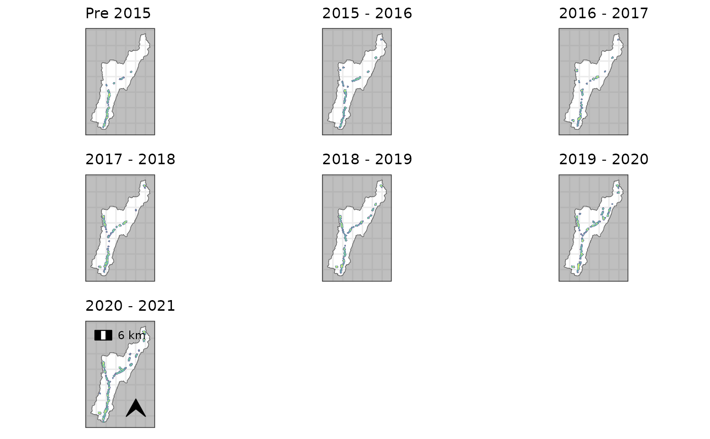

generate a panel plot of multiple maps generated with plot_territories or plot_forage_density
panel_plot.RdFunction to help build a panel plot consisting of multiple plots from different time periods.
Usage
panel_plot(
terr_plot_list,
scalebar = TRUE,
scalebar_loc = "tl",
north_arrow = TRUE,
north_arrow_loc = "br",
north_arrow_size = 0.5,
guide = FALSE,
guide_fig_height = c(30, 1),
n_col = NULL
)Arguments
- terr_plot_list
list of ggplots generated from either
plot_territoriesorplot_forage_density- scalebar
Boolean to add a scalebar to the last plot in the sequence
- scalebar_loc
character vector to determine the scalebar location on final plot: 'tl', 'bl', 'tr', 'br' Meaning "top left" etc.
- north_arrow
Boolean to add a north arrow to the last plot in the sequence
- north_arrow_loc
character vector to determine the north arrow location on final plot: 'tl', 'bl', 'tr', 'br' Meaning "top left" etc.
- north_arrow_size
numeric to set the size of the north arrow
- guide
Boolean - if TRUE then the legend is extracted from the list of figures and places below the panels
- guide_fig_height
numeric vector length 2 - giving the heights for the figure and lengend objects.
- n_col
integer denoting the number of columns the panel should use. if NULL (the default) the number is generated automatically with
ceiling(sqrt(length(terr_plot_list))).
Examples
#'# kde plots for panel/animation
fsd_ggplot <- function(.data, p.names, p.ext, add_map_stuff= FALSE){
if (isTRUE(add_map_stuff)){
fsd <- plot_forage_density(.data, basemap = FALSE, guide = FALSE, catchment = RivOtter_Catch_Area,
rivers = FALSE, plot_extent = p.ext, axes_units = FALSE) +
ggplot2::labs(subtitle = sprintf('Beaver Foraging Density: %s', p.names))
} else {
fsd <- plot_forage_density(.data, basemap = FALSE, axes_units = FALSE, north_arrow = FALSE, scalebar = FALSE, guide = FALSE,
catchment = RivOtter_Catch_Area, rivers = FALSE, plot_extent = p.ext) +
ggplot2::labs(subtitle = p.names)
}
return(fsd)
}
# get name list for plots
plot_names <- unique(RivOtter_FeedSigns$SurveySeason)
ras_ext <- inflate_bbox(RivOtter_FeedSigns, 250)
# generate KDE rasters for all survey periods
kde_ras_list <- RivOtter_FeedSigns %>%
dplyr::group_by(SurveySeason) %>%
dplyr::group_map(., ~forage_density(., 'FeedCat', kd_extent = ras_ext))
#>
#> calculating weighted kde
#> Warning: CRS object has comment, which is lost in output; in tests, see
#> https://cran.r-project.org/web/packages/sp/vignettes/CRS_warnings.html
#>
#> calculating weighted kde
#> Warning: CRS object has comment, which is lost in output; in tests, see
#> https://cran.r-project.org/web/packages/sp/vignettes/CRS_warnings.html
#>
#> calculating weighted kde
#> Warning: CRS object has comment, which is lost in output; in tests, see
#> https://cran.r-project.org/web/packages/sp/vignettes/CRS_warnings.html
#>
#> calculating weighted kde
#> Warning: CRS object has comment, which is lost in output; in tests, see
#> https://cran.r-project.org/web/packages/sp/vignettes/CRS_warnings.html
#>
#> calculating weighted kde
#> Warning: CRS object has comment, which is lost in output; in tests, see
#> https://cran.r-project.org/web/packages/sp/vignettes/CRS_warnings.html
#>
#> calculating weighted kde
#> Warning: CRS object has comment, which is lost in output; in tests, see
#> https://cran.r-project.org/web/packages/sp/vignettes/CRS_warnings.html
#>
#> calculating weighted kde
#> Warning: CRS object has comment, which is lost in output; in tests, see
#> https://cran.r-project.org/web/packages/sp/vignettes/CRS_warnings.html
# generate panel plot showing sequence of feeding density maps
kde_panel <- kde_ras_list %>%
purrr::map2(.x=., .y=plot_names, ~fsd_ggplot(.x, .y,
inflate_bbox(RivOtter_Catch_Area, 200))) %>%
panel_plot(.)
#> Warning: attribute variables are assumed to be spatially constant throughout all geometries
#> Warning: `guides(<scale> = FALSE)` is deprecated. Please use `guides(<scale> = "none")` instead.
#> Warning: attribute variables are assumed to be spatially constant throughout all geometries
#> Warning: `guides(<scale> = FALSE)` is deprecated. Please use `guides(<scale> = "none")` instead.
#> Warning: attribute variables are assumed to be spatially constant throughout all geometries
#> Warning: `guides(<scale> = FALSE)` is deprecated. Please use `guides(<scale> = "none")` instead.
#> Warning: attribute variables are assumed to be spatially constant throughout all geometries
#> Warning: `guides(<scale> = FALSE)` is deprecated. Please use `guides(<scale> = "none")` instead.
#> Warning: attribute variables are assumed to be spatially constant throughout all geometries
#> Warning: `guides(<scale> = FALSE)` is deprecated. Please use `guides(<scale> = "none")` instead.
#> Warning: attribute variables are assumed to be spatially constant throughout all geometries
#> Warning: `guides(<scale> = FALSE)` is deprecated. Please use `guides(<scale> = "none")` instead.
#> Warning: attribute variables are assumed to be spatially constant throughout all geometries
#> Warning: `guides(<scale> = FALSE)` is deprecated. Please use `guides(<scale> = "none")` instead.
#> Warning: `guides(<scale> = FALSE)` is deprecated. Please use `guides(<scale> = "none")` instead.
#> Warning: `guides(<scale> = FALSE)` is deprecated. Please use `guides(<scale> = "none")` instead.
#> Warning: `guides(<scale> = FALSE)` is deprecated. Please use `guides(<scale> = "none")` instead.
#> Warning: `guides(<scale> = FALSE)` is deprecated. Please use `guides(<scale> = "none")` instead.
#> Warning: `guides(<scale> = FALSE)` is deprecated. Please use `guides(<scale> = "none")` instead.
#> Warning: `guides(<scale> = FALSE)` is deprecated. Please use `guides(<scale> = "none")` instead.
#> Warning: `guides(<scale> = FALSE)` is deprecated. Please use `guides(<scale> = "none")` instead.
#> Warning: Removed 1546965 rows containing missing values (geom_raster).
#> Warning: Removed 1543858 rows containing missing values (geom_raster).
#> Warning: Removed 1547727 rows containing missing values (geom_raster).
#> Warning: Removed 1540089 rows containing missing values (geom_raster).
#> Warning: Removed 1538053 rows containing missing values (geom_raster).
#> Warning: Removed 1531005 rows containing missing values (geom_raster).
#> Warning: Removed 1523709 rows containing missing values (geom_raster).
